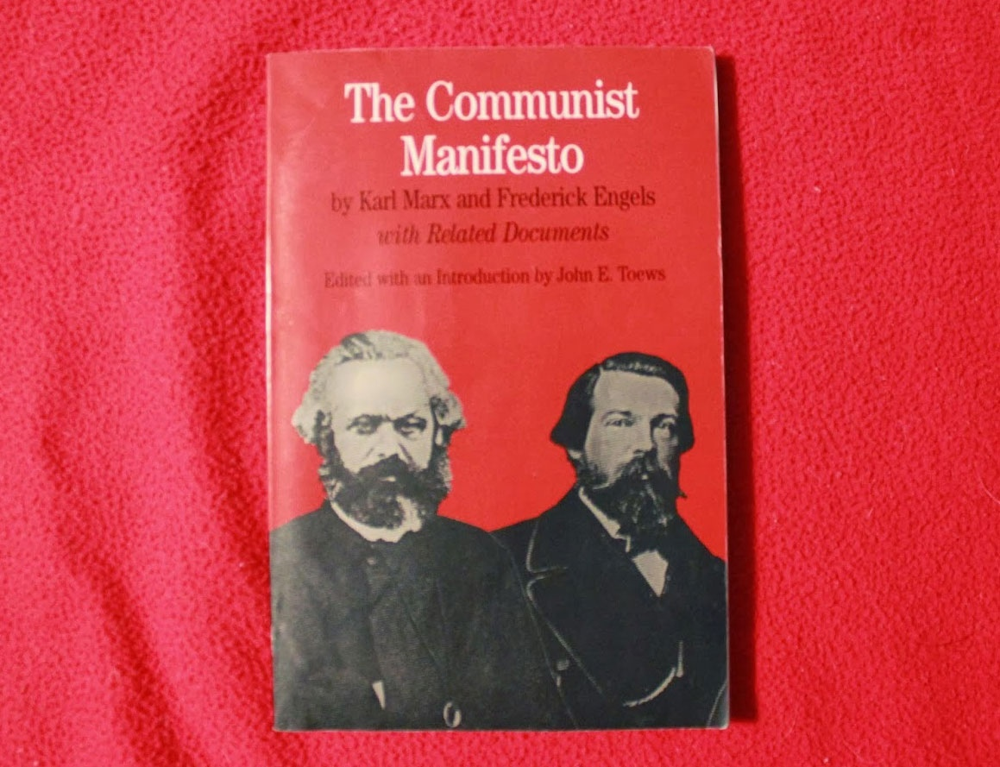

Исторический материализм
Карл Маркс считал, что человеческое общество определяется его материальными условиями или личными отношениями. Он открыл закон эволюции человеческой истории.
Исторический материализм указывает на то, что для развития общества производство материальных благ является основополагающим. Прогресс общества зависит от совершенства этого материального производства.
Социально-экономические изменения основаны на замене производственных отношений. Самая важная вещь в теории исторического материализма Маркса заключается в том, что он сосредоточил свое внимание на производстве материалов и экономических законах общества.
Его теория впервые раскрыла, как общество развивается благодаря росту материального производства. Это впервые привело к пониманию той великой силы, которую имеют народные и трудящиеся массы. Таким образом, история социальной эволюции была понята.
Классовая борьба
В истории человечества всегда была борьба между народами и обществами, за которой следовали периоды революции и войн.
Каждое общество разделено на две большие группы врагов, которые сталкиваются друг с другом напрямую: капиталистический / буржуазный и рабочий класс. Из всех классов, с которыми сталкивается класс капиталистов, только рабочий класс является революционным классом.
Секрет товара
Маркс различает его потребительскую стоимость и его обменную стоимость в товарах. В обществе, основанном на капитализме, его вес падает на товары, являющиеся их фундаментальной частью системы.
Маркс назвал это явление фетишизмом, когда предметы превращаются в товар. В капиталистических системах общественные отношения заменяются денежными соглашениями.
Социологические теории
Он считается одним из столпов современной социологии. Создание новых представлений о человеческом обществе, определяемых материальными условиями или экономическими и личными отношениями, заставило его открыть так называемый закон эволюции человеческой истории.. Теория отчуждения предлагает глубокое размышление о сущности человека, которая теряется в процессе материального производства и в постоянной работе по созданию продуктов и их потреблению, не заглядывая в его душу и окружающий его мир природы.. Это высшая критика капиталистической системы, которую Маркс рассматривает как создателя фетишей, превращающих индивида в существо, которое сильно отделено от него самого. С другой стороны, центральная ось его вклада по отношению к историческому материализму основана на материальном производстве и экономических законах общества.. Таким образом, Маркс оставил соответствующие идеи об экономических и социальных изменениях посредством улучшения производства товаров и услуг и, следовательно, эволюции общества от власти народных и трудящихся масс.
Общественные движения
Работа Коммунистический манифест, то, что он написал вместе со своей женой Дженни и которое было опубликовано в 1848 году, породило социальные изменения в мышлении рабочего класса того времени, и этот новый подход превысил будущие поколения. В своих выражениях он по существу выражает увещевание о роли рабочего класса и эксплуатации, осуществляемой капиталистическим классом, владельцем средств производства.
Вклад в экономику
Интерпретации Карла Маркса экономической сферы были очень важны, даже в наши дни. Это так, потому что они служат для объяснения исторических и недавних процессов из своих идей и концепций, как в области политики, так и в экономической и социальной областях.. Примером этого является теория стоимости, основание которой указывает, что стоимость услуги или продукта определяется человеко-часами, необходимыми для его производства.. С другой стороны, он также выдвигает в качестве примера теорию прибавочной стоимости, в которой предлагается, что стоимость, уплачиваемая за продукт, не соответствует усилиям, выплачиваемым работнику, производящему его, увеличивающему богатство капиталиста и эксплуатирующему рабочий класс, которому ему платят только то, что ему нужно, чтобы выжить.
Теория отчуждения
В первый раз, когда Маркс представил свою теорию выравнивания, он сделал это в Экономические и философские рукописи (1844). Маркс утверждал, что выравнивание - не более чем систематический результат капитализма. При капитализме результаты производства принадлежат людям, которые создают работу, экспроприируя продукт, созданный другими.
Идеи Первого Интернационала
Эта организация была основана 28 сентября 1864 года для объединения рабочих европейских стран. Его целью было положить конец эксплуатации рабочих буржуазией. Карл Маркс стал его интеллектуальным лидером. Церемония открытия, сам Маркс завершил ее криком «Пролетарии всех стран, объединяйтесь!» Так же, как он сделал в Коммунистический Манифест. Коммунистический манифест (1848) Эта работа основана на пересечении двух конкретных идей. Во-первых, каждый человек, а следовательно, и общество, в котором он развивается, обладает идеологией, которая его характеризует.. Его мысль, его идея концепций, его способ осмысления жизни, социальные и моральные ценности и применение всего этого решающим образом определяются производительной и экономической структурой каждого общества.. По этой причине Маркс считает, что экономико-производственная структура является дифференцирующим элементом между различными обществами, которые существуют. Другая идея этого манифеста основана на соотношении власти и узуфрукта рабочей силы, представленной индивидуумом, которого капиталист использует для получения экономических выгод и прироста капитала, которые превышают первоначальные затраты, которые он нанимает.
Немецкая идеология (1846)
Цель этой работы - понять, что такое капитализм и как он влияет на общество в данный момент. Его идея справедливости направлена на преобразование общества, в котором человек эксплуатируется человеком. Он утверждает, что единственный способ понять общество в данный момент - это определить, через какие действия человек попадает в ситуацию, в которой он оказывается. Это достигается только через понимание его исторического развития; это источник, из которого питается исторический материализм. Эта работа возникает в отличие от идей, выдвинутых Гегелем, и защищает тот факт, что только конкретные действия, обмен и отношения между человеком с природой и другими людьми позволяют понять историю их обществ, а не думать или образ, который они имеют о себе.
